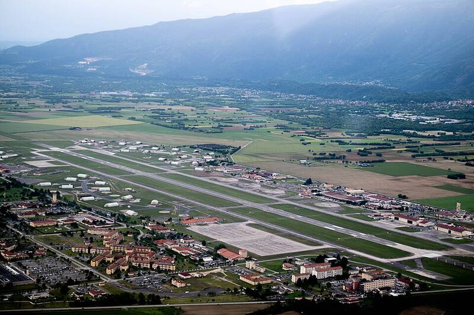

Aviano Air Base
Italy

A U.S. Air Force fighter base in northeastern Italy. 1
Open in the interactive Watcher
Sources
- Aviano Air Base Wikipedia
Italy

A U.S. Air Force fighter base in northeastern Italy. 1
Open in the interactive Watcher